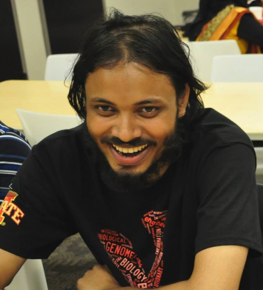
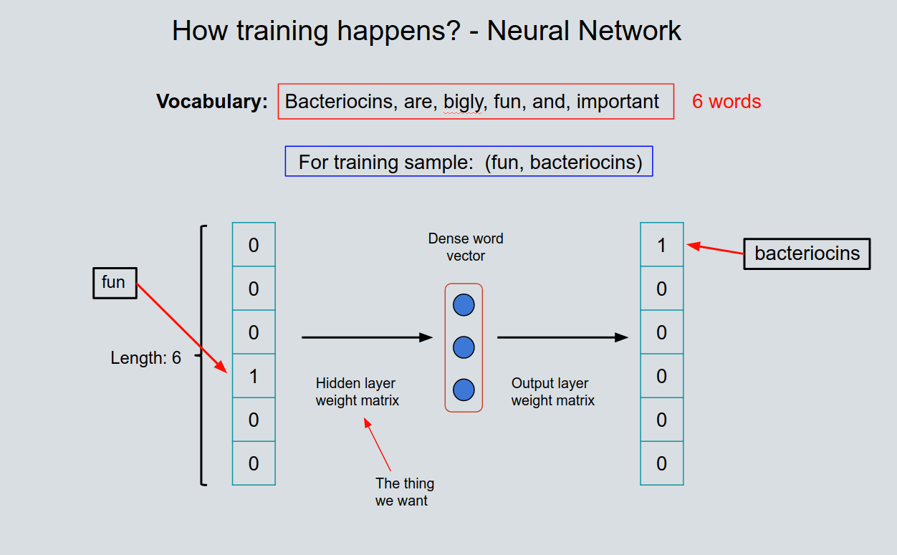
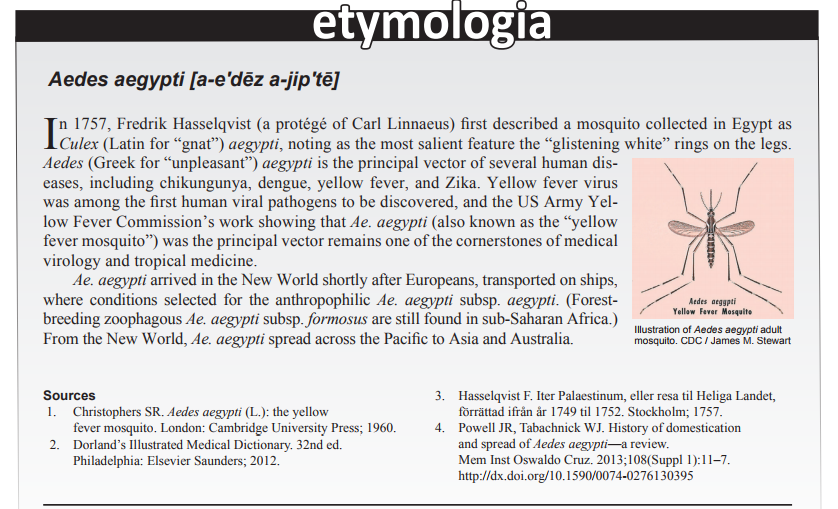
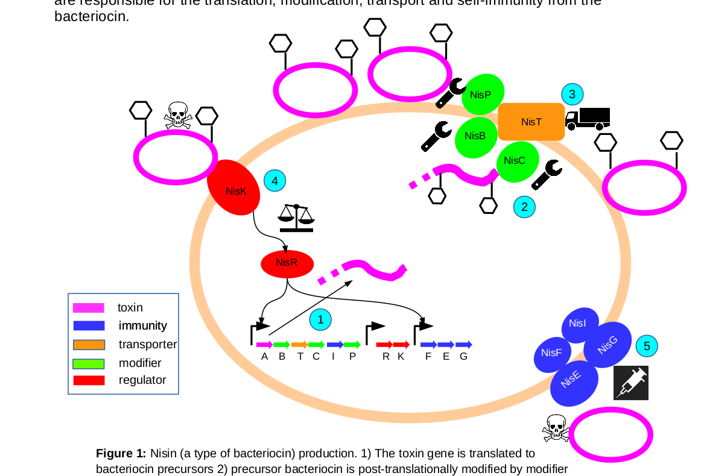

|
Nafiz Hamid I am a PhD student in Bioinformatics at Iowa State University. I am in the Computational Biology lab, advised by Iddo Friedberg. Before this, I received a Bachelors in CS from Islamic University of Technology(IUT), Bangladesh in 2012. I worked as a software engineer at Samsung Bangladesh R&D Institute,Bangladesh after that before joining Iowa State. My Erdos number is 4. |
 |
| Research |
 |
Bacteriocin detection with distributed biological sequence representation |
|  |
Bacteriocin detection with distributed biological sequence representation |
|  |
Chikungunya Virus in Febrile Humans and Aedes aegypti Mosquitoes, Yucatan, Mexico Nohemi Cigarroa-Toledo, Bradley J. Blitvich, Rosa C. Cetina-Trejo, Lourdes G. Talavera-Aguilar, Carlos M. Baak-Baak, Oswaldo M. Torres-Chablé, Md Nafiz Hamid, Iddo Friedberg, Pedro González-Martinez, Gabriela Alonzo-Salomon, Elsy P. Rosado-Paredes, Nubia Rivero-Cárdenas, Guadalupe C. Reyes-Solis, Jose A. Farfan-Ale, Julian E. Garcia-Rejon, and Carlos Machain-Williams Emerging infectious diseases, 22.10 (2016): 1804 |
|  |
Using gene neighborhoods to mine for bacteriocins |